205 — Hosting progresivo con Amplify, S3 y CloudFront
Parte: 17 — AWS: arquitectura, automatización y operación en producción
Nivel: avanzado · Horas estimadas: 4
Laboratorio: delivery · Estado: EXECUTABLE_CORE
🎯 Propósito
Publicar una aplicación web en AWS eligiendo entre el camino gestionado y el montado a mano, y entender qué se gana y qué se pierde con cada uno. La clase compara Amplify Hosting con el montaje S3 + CloudFront pieza a pieza, fija los valores por defecto que hay que cambiar para producción —que son más de los que parece—, y trata los tres asuntos que rompen estos despliegues: el enrutado de aplicaciones de una sola página, la invalidación de caché en cada publicación y el acceso al bucket.
📚 Resultados de aprendizaje
Al finalizar podrás:
- Elegir entre alojamiento gestionado y montaje propio con criterios claros.
- Configurar S3 y CloudFront con los valores correctos para producción.
- Resolver el enrutado de una aplicación de una sola página sin romper los 404 reales.
- Publicar sin invalidaciones masivas, usando huellas en los nombres.
- Cerrar el acceso al origen para que solo la distribución pueda leerlo.
🧩 Conceptos centrales
| Concepto | Comprensión verificable |
|---|---|
Amplify Hosting |
Servicio gestionado que construye y publica una aplicación web desde un repositorio, con distribución incluida. |
distribución |
Recurso de CloudFront que sirve el contenido desde el borde y define caché, orígenes y comportamiento. |
control de acceso al origen |
Mecanismo por el que solo la distribución puede leer el bucket, que queda privado. |
comportamiento de caché |
Regla por patrón de ruta que fija clave de caché, validez y política de origen. |
función de borde |
Código ligero que se ejecuta en el borde para reescribir peticiones o añadir cabeceras. |
huella en el nombre |
Sufijo derivado del contenido que hace innecesaria la invalidación al publicar. |
🧠 Modelo mental
AWS se aprende como una progresión operativa: identidad federada, infraestructura declarativa, entrega, señales, recuperación y costo controlado.
Aplicado a esta clase, separa siempre cuatro planos: intención (qué necesita el usuario), configuración (qué declaramos), estado observado (qué existe de verdad) y evidencia (cómo sabemos que cumple). Confundirlos produce diseños que se ven correctos en un diagrama pero fallan al operar.
🗺️ Flujo de razonamiento

📖 Desarrollo
1. Gestionado o montado a mano
Las dos opciones sirven para lo mismo y se diferencian en control y en operación.
AMPLIFY HOSTING
construye desde el repositorio y publica
da ramas de vista previa por cada propuesta de cambio
certificado y dominio gestionados
reversión a una publicación anterior
reescrituras y redirecciones por configuración
distribución por debajo, sin gestionarla
no da
control fino de la clave de caché por ruta
comportamientos con orígenes distintos
políticas de origen propias
WAF con reglas propias en muchos casos
acceso a los registros de la distribución
S3 + CLOUDFRONT MONTADO
da control total: comportamientos, claves, políticas,
WAF, registros, varios orígenes
cuesta
montarlo y mantenerlo
y aprender los valores por defecto que hay que cambiar
Y el criterio:
¿el sitio es estático o casi, y no hay requisitos de caché
ni de seguridad especiales?
→ Amplify; se monta en una tarde y se opera solo
¿hay API en el mismo dominio, varias rutas con caché
distinta, WAF propio o necesidad de registros?
→ S3 + CloudFront
¿el equipo ya opera CloudFront para otras cosas?
→ montarlo, por coherencia
Y una vía intermedia que funciona bien:
Amplify para las ramas de vista previa (donde su valor es
mayor y los requisitos son bajos)
S3 + CloudFront para producción
→ y así se tiene rapidez donde importa la velocidad y
control donde importa el control
Y la advertencia de coste que aparece con Amplify:
factura por minuto de construcción y por gigabyte servido
→ con muchas ramas de vista previa y construcciones
frecuentes, la partida de construcción sube deprisa
→ y las vistas previa no caducan solas ley 25
2. Los valores por defecto que hay que cambiar
Montar S3 + CloudFront con los valores por defecto produce algo que funciona y no es apto para producción. Esta es la lista.
EL BUCKET
✗ por defecto se tiende a activar «alojamiento de sitio
web estático» y hacerlo público
✓ correcto bucket PRIVADO, sin alojamiento estático,
accesible solo por control de acceso al
origen desde la distribución
por qué un bucket público es alcanzable saltándose
la distribución: sin WAF, sin registros,
sin caché y pagando salida clases 189, 200
✓ además bloqueo de acceso público activado
✓ cifrado en reposo
✓ versionado, para poder revertir una
publicación
LA DISTRIBUCIÓN
✗ por defecto política de caché heredada que reenvía
cabeceras y cookies innecesarias
✓ correcto política que NO incluye cookies ni
cabeceras salvo las que varían clase 197
✗ por defecto un solo comportamiento para todo
✓ correcto comportamientos por patrón de ruta
✗ por defecto HTTP permitido
✓ correcto redirección a HTTPS y versión mínima de TLS
✗ por defecto sin cabeceras de seguridad
✓ correcto política de cabeceras de respuesta
✗ por defecto sin compresión negociada en algunos casos
✓ correcto compresión activada
✗ por defecto registros desactivados
✓ correcto registros a un bucket propio, con caducidad
Y los comportamientos que hay que definir, con sus valores:
/assets/* o /_next/static/* (recursos con huella)
validez 1 año, inmutable
clave de caché solo la ruta
→ nunca se invalidan: cambian de nombre clase 197
/index.html y las rutas de la aplicación
validez 0 o muy corta, con revalidación
→ es el único fichero que hay que invalidar al publicar
/api/*
otro origen (API Gateway o balanceador)
sin caché, reenviando las cabeceras necesarias
→ tener la API en el mismo dominio evita CORS y cookies
de terceros
/media/* (imágenes subidas)
validez media, con nombre versionado si se pueden
reemplazar
Y una decisión de arquitectura que ahorra problemas:
servir la aplicación y la API bajo el MISMO dominio, con
comportamientos distintos
→ sin CORS, sin cookies de terceros y con una sola
distribución que registrar y proteger
3. Las tres cosas que rompen
1 · El enrutado de una aplicación de una sola página.
EL PROBLEMA
la aplicación tiene rutas como /pedidos/4471
ese objeto NO existe en el bucket
→ S3 devuelve 404 y el usuario ve un error al recargar o
al entrar por un enlace directo
LA SOLUCIÓN HABITUAL, Y SU DEFECTO
configurar «404 → /index.html con código 200»
funciona… y convierte TODOS los 404 en 200
→ incluidos los de recursos que faltan de verdad
→ los buscadores indexan páginas inexistentes
→ y los errores de despliegue se vuelven invisibles
ley 13
LA SOLUCIÓN CORRECTA
una función de borde que reescribe la petición a
/index.html SOLO si la ruta no tiene extensión de fichero
→ /pedidos/4471 → index.html, 200
→ /assets/x.js → 404 real si no existe
→ y para rutas conocidas de la aplicación, mejor aún:
lista explícita
2 · La invalidación en cada publicación.
EL ANTIPATRÓN
publicar y ejecutar «invalidar /*»
→ tira toda la caché en cada despliegue
→ avalancha contra el origen clase 197
→ y por encima de cierto número, las invalidaciones se
facturan
EL PATRÓN CORRECTO
1 construir con huella en el nombre de cada recurso
app.7f3a91.js, estilos.2b91cd.css
2 subir los recursos nuevos PRIMERO
3 subir index.html AL FINAL
→ así nunca hay un index que apunte a algo que aún no
está
4 invalidar SOLO /index.html (y las rutas HTML)
5 no borrar los recursos antiguos de inmediato
→ los usuarios con la página abierta siguen pidiéndolos
→ borrarlos con una regla de caducidad de 30 días
Y el fallo clásico que evita el paso 5:
publicar y borrar lo antiguo a la vez
→ quien tenía la aplicación abierta pide un recurso que ya
no existe y la página se rompe hasta recargar
3 · El acceso al bucket.
CON CONTROL DE ACCESO AL ORIGEN
la distribución firma sus peticiones al bucket
la política del bucket permite SOLO a esa distribución
el bucket no tiene acceso público
→ y el contenido solo se puede obtener por la
distribución, con su WAF, sus registros y su caché
LO QUE HAY QUE COMPROBAR, NO SUPONER
intentar leer un objeto directamente por la URL del bucket
→ debe fallar ley 22
Y el fallo de configuración que deja el hueco:
dejar activado el alojamiento de sitio web estático del
bucket «por si acaso»
→ expone un punto de entrada alternativo, público y sin
control clase 189
4. Publicar y operar
La canalización de publicación, que debe hacer lo mismo siempre:
1 construir, con huella en los nombres
2 autenticarse sin secretos clase 206
3 subir recursos nuevos
4 subir HTML
5 invalidar solo HTML
6 comprobar que el sitio responde y sirve la versión nueva
7 y si no, revertir
Y la reversión, que hay que tener resuelta antes de necesitarla:
con versionado del bucket y huellas
revertir = volver a subir el index.html anterior e
invalidarlo
→ los recursos antiguos siguen ahí (por eso no se borran)
→ tiempo de reversión: segundos
sin huellas ni versionado
→ reconstruir y volver a publicar: minutos u horas
Lo que hay que vigilar:
tasa de aciertos por comportamiento, no global clase 197
errores 4xx y 5xx desde el origen
bytes servidos desde el borde y desde el origen
latencia en el borde, por región
certificado: días hasta caducar y días desde la renovación
clase 196
y el coste: peticiones, transferencia e invalidaciones
Y dos alertas que evitan sorpresas:
«la tasa de aciertos ha caído más de 10 puntos»
→ suele significar que alguien cambió la clave de caché
o que se está invalidando de más
«hay peticiones directas al bucket»
→ si el control de acceso al origen está bien, deben ser
cero; cualquier cosa distinta es un hueco
Y una nota sobre el dominio y el certificado:
el certificado de una distribución de CloudFront debe estar
en la región us-east-1, independientemente de dónde esté
todo lo demás
→ es una de esas particularidades que cuestan una tarde la
primera vez
Y la lista de comprobación de la clase:
☐ la elección entre gestionado y montado está justificada
☐ el bucket es privado y sin alojamiento estático activado
☐ el acceso solo es posible por la distribución, comprobado
☐ hay bloqueo de acceso público y versionado
☐ hay comportamientos por patrón de ruta
☐ la clave de caché no incluye cookies ni cabeceras
innecesarias
☐ los recursos llevan huella y validez de un año
☐ el HTML tiene validez corta
☐ el enrutado de la aplicación no convierte todos los 404
en 200
☐ la publicación sube HTML al final e invalida solo HTML
☐ los recursos antiguos caducan a 30 días, no se borran
☐ hay redirección a HTTPS y cabeceras de seguridad
☐ los registros están activados con caducidad
☐ la reversión está probada y tarda segundos
☐ hay alerta si aparecen peticiones directas al bucket
Y el cierre que enlaza con la clase siguiente: la canalización que publica necesita permisos en AWS, y el modo habitual de dárselos —una clave de acceso guardada como secreto— es exactamente lo que este programa lleva desaconsejando desde la parte 11. Federación desde el repositorio, sin secretos, es la materia de la clase 206.
🔬 Ejemplo trabajado
CloudShop publica su tienda web. Lo que sigue es la comparación de las dos opciones con cifras, el montaje que eligieron, y los tres problemas que aparecieron —dos de ellos por valores por defecto.
La comparación, hecha con datos:
requisitos
la tienda y la API deben estar bajo el mismo dominio
WAF con reglas propias clase 209
registros de la distribución para análisis de coste
caché distinta por ruta: 4 comportamientos
ramas de vista previa para cada propuesta de cambio
Amplify
cubre ramas de vista previa, certificado, reversión
no cubre WAF propio, registros, comportamientos por ruta
y otro origen para /api/*
decisión
producción S3 + CloudFront montado
vistas previa Amplify, con caducidad automática a
los 14 días
motivo de la caducidad las ramas de vista previa no se
borran solas y facturan ley 25
El montaje.
bucket
privado, sin alojamiento estático
bloqueo de acceso público activado
versionado activado
cifrado con clave gestionada
regla de caducidad: versiones antiguas a 30 días
distribución
origen 1 el bucket, con control de acceso al origen
origen 2 API Gateway, para /api/* clase 207
TLS mínimo 1.2, redirección a HTTPS
compresión activada
registros a un bucket propio, caducidad de 90 días
WAF asociado clase 209
comportamientos
/assets/* caché 1 año, inmutable; clave = ruta
/media/* caché 7 días; clave = ruta
/api/* sin caché; origen 2; reenvía
Authorization y Content-Type
por defecto caché 0 con revalidación; función de borde
de enrutado
Problema 1 · Todos los 404 devolvían 200.
montaje inicial
página de error personalizada: 404 → /index.html con 200
funcionaba: las rutas de la aplicación cargaban bien
lo que se descubrió tres semanas después
· un despliegue subió el HTML sin uno de los recursos
el navegador pidió /assets/app.9c2f1a.js
la distribución devolvió index.html con código 200
el navegador intentó ejecutar HTML como JavaScript
→ pantalla en blanco, sin ningún error en los paneles
→ la tasa de errores era del 0 % ley 13
· el buscador había indexado 1.900 rutas inexistentes
generadas por enlaces rotos de una campaña
corrección
función de borde con esta lógica
si la ruta contiene un punto (tiene extensión) → pasa
tal cual; si no existe, 404 real
si no → reescribe a /index.html, código 200
y una alerta nueva
«peticiones a /assets/* que devuelven 404»
→ habría detectado el despliegue incompleto en 30 s
Problema 2 · La invalidación masiva en cada publicación.
la canalización hacía
aws s3 sync ... --delete
aws cloudfront create-invalidation --paths "/*"
efectos medidos
tasa de aciertos tras cada publicación 97 % → 12 %
tiempo en recuperarla ~40 min
peticiones al origen en ese periodo ×31
y dos veces, con despliegues en hora punta, el origen se
saturó clase 197
invalidaciones facturadas al mes 1.100 rutas
y el efecto del --delete
los recursos antiguos se borraban al publicar
→ quien tenía la tienda abierta veía la página romperse
→ 3 incidentes reportados por atención al cliente,
clasificados como «error del navegador»
corrección
construcción con huella en todos los recursos
publicación en tres pasos
1 subir /assets/* nuevos (sin borrar)
2 subir HTML
3 invalidar solo /index.html y /
recursos antiguos: regla de caducidad a 30 días
resultado
tasa de aciertos tras publicar 97 % → 96,4 %
invalidaciones al mes 1.100 → 62
incidentes por publicación 3 → 0
tiempo de publicación 4 min → 1 min
Problema 3 · El bucket seguía siendo alcanzable.
la prueba negativa, ejecutada en la revisión de seguridad
pedir un objeto por la URL directa del bucket
→ FUNCIONÓ
causa
el alojamiento de sitio web estático se había activado
durante el montaje inicial y no se desactivó
la política del bucket tenía una regla antigua que
permitía lectura pública, añadida «para probar» ley 25
qué implicaba
se podía descargar todo el contenido saltándose
el WAF
los registros
la caché → pagando salida a precio de S3 clase 200
y en los registros del bucket aparecían 41.000 peticiones
al mes por esa vía, de rastreadores
corrección
alojamiento estático desactivado
política del bucket reducida al control de acceso al
origen
bloqueo de acceso público activado
alerta: «peticiones directas al bucket > 0»
y la prueba negativa añadida al calendario trimestral
La reversión, probada:
ensayo
publicar una versión con un fallo evidente
revertir subiendo el index.html anterior desde el
versionado e invalidándolo
tiempo medido 38 s
recursos antiguos disponibles sí (no se borran)
usuarios afectados durante la reversión los que cargaron
en esos 38 s
El resultado, tres meses después:
```text antes después tasa de aciertos en régimen 97 % 97,4 % tasa de aciertos tras publicar 12 % 96,4 % invalidaciones al mes 1.100 62 peticiones directas al bucket 41.000/mes 0 404 reales que se veían como 200 todos 0 tiempo de reversión reconstruir 38 s incidentes por publicación 3/trim 0 coste mensual de la distribución 1.240 € 890 €
**La lección que esta clase deja**: dos de los tres problemas venían de **valores por defecto que funcionaban**: convertir los 404 en 200 hacía que las rutas de la aplicación cargasen, y el alojamiento estático del bucket hacía que el contenido se sirviera. Los dos escondían algo: un despliegue incompleto que no generaba ningún error y cuarenta y un mil peticiones al mes por un camino sin WAF ni registros. Y el tercero —invalidar todo en cada publicación— **costaba cuarenta minutos de caché fría por despliegue** y se resolvió cambiando el orden de tres comandos.
## 🧪 Laboratorio guiado
Ejecuta desde la raíz:
```bash
python classes/part-17-aws-production-architecture/205-hosting-progresivo-con-amplify-s3-y-cloudfront/lab.py
El laboratorio selecciona el motor de práctica delivery y produce
lab_result.json. El escenario, sus comprobaciones y el artefacto esperado corresponden a
esta clase; no requiere credenciales y deja explícito qué debe revalidarse en un sandbox real.
- Lee
exercise.stepsy formula una predicción antes de ejecutar. - Ejecuta la práctica y verifica todos los elementos de
checks. - Provoca el caso de
negative_testy explica la señal observada. - Materializa
aws-static-platformenevidence/usando la plantilla indicada. - Para proveedor real, sigue
sandbox.requires, registra costo y ejecutadestroy.
Evidencia esperada
El artefacto principal es un pipeline con gates, promoción y rollback. Además, la entrega debe incluir el comando ejecutado, la salida estructurada y una conclusión que no exceda lo observado.
🏆 Reto verificable
Construye aws-static-platform para el caso CloudShop. Incluye una alternativa descartada,
un supuesto que pueda falsarse, una prueba de fallo y una decisión de rollback.
✅ Criterio de aceptación
- [ ]
lab.pytermina con código 0 y genera JSON válido. - [ ] La entrega conecta al menos tres requisitos con mecanismos verificables.
- [ ] Existe una prueba positiva y una prueba negativa con evidencia.
- [ ] Seguridad, costo y operación aparecen como decisiones, no como anexos.
- [ ] Se declara una limitación y una condición que obligaría a revisar el diseño.
- [ ] Otra persona puede repetir el recorrido sin conocimiento tácito.
⚠️ Errores frecuentes
| Síntoma | Causa probable | Corrección |
|---|---|---|
| Los errores 404 reales se ven como respuestas correctas | La página de error personalizada convierte todos los 404 en 200 con index.html | Reescribe a index.html solo las rutas sin extensión, con una función de borde, y alerta sobre 404 en recursos. |
| La tasa de aciertos se hunde tras cada publicación | Se invalida con comodín en cada despliegue | Construye con huella en los nombres, sube el HTML al final e invalida solo el HTML. |
| La página se rompe para quien la tenía abierta al publicar | Se borran los recursos antiguos al sincronizar | No borres al publicar; retira los recursos viejos con una regla de caducidad a 30 días. |
| Se puede descargar el contenido saltándose la distribución | El bucket tiene alojamiento estático o una política pública heredada de las pruebas | Bucket privado con control de acceso al origen, bloqueo de acceso público, y prueba negativa que compruebe que la URL directa falla. |
| La factura de construcción sube sin control | Las ramas de vista previa no caducan y siguen construyendo | Pon caducidad automática a las vistas previa; lo provisional sin fecha se queda para siempre. |
| El certificado no se puede asociar a la distribución | Se emitió en una región distinta de us-east-1 | Emite el certificado de una distribución de CloudFront en us-east-1, aunque el resto del sistema esté en otra región. |
🛡️ Seguridad, ética y costo
Trabaja con cuentas propias o sandboxes autorizados. No publiques secretos, identificadores reales ni datos personales. Antes de crear recursos pagos define presupuesto, etiquetas y comando de destrucción; después verifica que no queden recursos huérfanos. Los ejemplos locales enseñan contratos, pero no certifican cumplimiento ni disponibilidad de producción.
❓ Preguntas de comprobación
- ¿En qué casos compensa el alojamiento gestionado y en cuáles el montaje propio?
- ¿Qué valores por defecto del bucket y de la distribución hay que cambiar para producción?
- ¿Cuál es el defecto de resolver el enrutado con la página de error 404?
- ¿Qué cinco pasos evitan invalidar la caché entera en cada publicación?
- ¿Qué prueba negativa comprueba que el bucket está realmente cerrado?
🔗 Referencias
- AWS (2025). Amplify Hosting user guide. https://docs.aws.amazon.com/amplify/latest/userguide/welcome.html
- AWS (2025). Restricting access to an Amazon S3 origin (origin access control). https://docs.aws.amazon.com/AmazonCloudFront/latest/DeveloperGuide/private-content-restricting-access-to-s3.html
- AWS (2025). CloudFront cache policies and cache key. https://docs.aws.amazon.com/AmazonCloudFront/latest/DeveloperGuide/controlling-the-cache-key.html
- AWS (2025). CloudFront Functions. https://docs.aws.amazon.com/AmazonCloudFront/latest/DeveloperGuide/cloudfront-functions.html
- AWS (2025). Blocking public access to your Amazon S3 storage. https://docs.aws.amazon.com/AmazonS3/latest/userguide/access-control-block-public-access.html
- Documentación oficial vigente del servicio implementado; registra URL y fecha de consulta.
📥 Descargar: Parte 17 en PDF · Recorrido de AWS en PDF · Manual integral